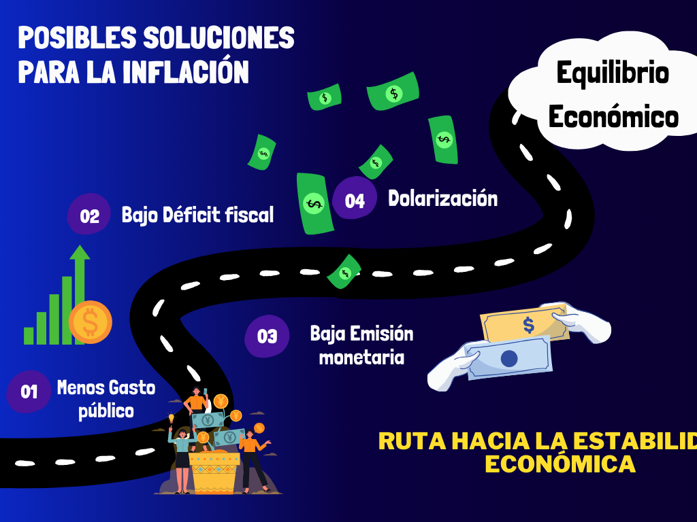

Posibles soluciones a la Inflación
Emision Monetaria
La emisión monetaria sin respaldo es la principal causa de la inflación. Esta se lleva a cabo por el gran déficit fiscal que tiene el país. Por lo que, si queremos solucionar el problema de la emisión monetaria, tenemos que bajar el déficit fiscal.
Déficit Fiscal
Para reducir la gran emisión monetaria sin respaldo del país, es necesario eliminar el déficit fiscal. Existen dos maneras de hacer esto, que son aumentando el ingreso o reduciendo el gasto. Aumentar el ingreso es imposible ya que la forma de hacerlo es a través de impuestos. La Argentina ya tiene 167, lo que la convierte en uno de los países con más impuestos del mundo. La única opción que queda es reducir el gasto público.
Gasto Público
Como comentamos la única manera de reducir el déficit fiscal es reduciendo el gasto público. Sin embargo, esto podría traer consecuencias negativas dado que muchas personas en la argentina dependen de la ayuda del Estado para vivir. Una posible solución es la que implementó Arturo Frondizi, en la cual puso en marcha un programa de desarrollo que transformó el país y en simultáneo llevó a cabo una política de estabilización, que implicaba bajar el gasto público.
Dolarización
Según el candidato a presidente Javier Milei, el cierre del Banco Central permitiría poner en circulación los dólares que mantiene como reservas internacionales y así incrementar el circulante del billete verde. Es decir, lo que va a poner fin al problema de la inflación, asegura, es que “le saquen la máquina de imprimir billetes a los políticos”. Para llevar a cabo su plan, Milei pretende impulsar una serie de cambios estructurales como una reforma del Estado, flexibilización del mercado laboral y apertura de la economía, antes de avanzar hacia la dolarización. Economistas consultados por BBC Mundo consideran que es poco probable que la dolarización se pueda implementar y, si llegara a ocurrir, no sería la solución a los problemas de fondo de la economía. “Dolarizar la economía argentina de un día para el otro es casi imposible porque el Banco Central no tiene dólares”, le dice a BBC Mundo Sebastián Menescaldi, director asociado de la consultora EcoGo. Algunos economistas como Steve Hanke, profesor de la Universidad Johns Hopkins, defienden la idea del candidato. “Javier Milei entiende que la única forma de resolver definitivamente el problema del peso argentino es hacer oficialmente lo que la mayoría de los argentinos hacen extraoficialmente: dolarizar”. Hanke argumenta que la única manera de terminar con la caída en el valor del peso es implementar la dolarización. En definitiva; aunque la dolarización puede disminuir la inflación, también puede generar una mayor concentración del ingreso y una mayor inestabilidad.